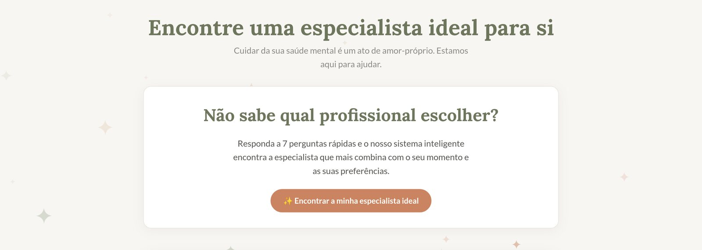

Conteúdo que para o scroll e respeita a marca.
Sou Leticia Costa, designer. Crio posts, carrosséis, Reels e fotos de produto com direção de arte consistente, no formato certo para cada tela e com arquivos organizados para o time.
@deepsaudepsicologia
Perfil de uma plataforma que conecta pacientes a psicólogas. O desafio: ser acolhedor sem ficar genérico e educativo sem ficar frio, falando a mesma língua do site deepsaude.com.
- Marca
- Deep Saúde (saúde mental)
- Entregas
- Direção de arte do perfil, posts, carrosséis educativos, capas e Reels, destaques
- Ferramentas
- Photoshop, Illustrator, Canva (templates), Premiere Pro, CapCut, Meta Business Suite
Grade em xadrez de cor
Creme, sálvia e terracota se alternam para o perfil ler como um conjunto e não como posts soltos.
A tipografia do site no feed
Título serifado em negrito, destaque em itálico terracota e as estrelinhas ✦ como assinatura.
Ilustração no lugar de rosto
Poltronas, xícara, folhas e formas simples evitam banco de imagem genérico e preservam a privacidade de quem atende e de quem é atendido.
Tudo leva ao quiz
Carrosséis e Reels terminam no quiz de match, o principal caminho do site para encontrar uma especialista.

Uma narrativa em 7 slides.
Gancho na capa, um sinal por lâmina, acolhimento no fim e chamada para o quiz. A linha que atravessa os slides convida a arrastar.
Arraste para ver todos os slides →
Até oito palavras, com uma palavra em destaque que gera identificação.
Número grande, título curto e duas linhas de apoio. Fácil de ler no celular.
Linguagem cuidadosa e o lembrete de que só uma profissional avalia cada caso.
Um único CTA, o quiz, com o mesmo botão que a pessoa encontra no site.
Ritmo de edição que segura até o fim.
Mesma técnica, linguagens diferentes: o Reels da Deep Saúde é calmo e acolhedor; o da YDH é escuro, rápido e com cara de tecnologia.
- Gancho nos 3 primeiros segundosPergunta ou imagem forte antes de qualquer logo.
- Cortes secos e zoom de ênfaseTroca de plano a cada 2 a 4 s para manter o olho em movimento.
- Legenda palavra a palavraPara quem assiste sem som, com a cor de destaque da marca.
- Tudo dentro da área seguraTexto longe da legenda do app e dos ícones da lateral.
- Trilha abaixo da voz e CTA no fimVolume da música cai quando alguém fala; o vídeo termina dizendo o que fazer.
Luz, sombra e tratamento.
Massageadores e eletrônicos da YDH fotografados em fundo infinito e tratados para ficarem fiéis, limpos e iguais entre si, prontos para catálogo, loja e redes.
Arraste para comparar o arquivo bruto com o tratado
- Cor
- Balanço de branco neutro e cor do produto conferida com a peça real
- Retoque
- Poeira, cabo, fita e emenda do fundo removidos; reflexos indesejados suavizados
- Luz
- Realces recuperados, sombras abertas e contraste local para mostrar textura
- Saídas
- 4:5 para feed, 1:1 para loja on-line, PNG sem fundo para catálogo
- Fluxo
- Lightroom para cor em lote → Photoshop para retoque e recorte
Uma peça, sete telas, a mesma marca.
Área segura é a sangria do digital: o que importa fica longe da interface do app, assim como a arte fica longe da faca na gráfica.
Templates que deixam o time rápido sem sair da identidade.
Grade de 6 colunas, margem de 80 px, estilos de texto nomeados e componentes reutilizáveis. Quem pega o arquivo depois sabe onde cada coisa vai.
- Frase acolhedora
- Capa, miolo e CTA de carrossel
- Anúncio do quiz
- Enquete e caixinha
- Link para o site
- Capas de destaque
- Capa com recorte 3:4
- Predefinição de legenda
- Tela final com CTA
- Selo ✦, botões e numeradores
- Ilustrações da marca
- Estilos de parágrafo e cor
Arquivo organizado é entrega no prazo.
- 01 / BriefingObjetivo e formato
Tema, público, canal, prazo e o que precisa acontecer depois do post.
- 02 / RoteiroTexto antes da arte
Gancho, sequência de slides ou cenas e CTA aprovados primeiro.
- 03 / ProduçãoTemplate certo
Arte a partir do template da marca, foto e captação de vídeo.
- 04 / EdiçãoRitmo e legenda
Cortes, legendas, trilha e versões para cada formato.
- 05 / RevisãoChecklist
Ortografia, área segura, cores, contraste e alinhamento com quem aprova.
- 06 / PublicaçãoAgendar e arquivar
Agendamento no Meta Business Suite e arquivos finais na pasta certa.
Calendário editorial
Modelo · outubro, semana 41Checklist antes de publicar
- Ortografia, acentuação e nome da marca
texto - Texto e legenda dentro da área segura
formato - Cores e fontes do guia da marca, contraste legível
marca - Legenda, texto alternativo e link na bio atualizados
post - Arquivo com nome, versão e pasta certos
arquivo
Nomenclatura
marca_data_peça_versãoDSmarca
_
2026-10ano-mês
_
carrossel-ansiedadeformato-tema
_
v03versão
.psdaberto
- DS_2026-10_reel-primeira-sessao_v02.prprojprojeto
- DS_2026-10_reel-primeira-sessao_1080x1920.mp4final
- DS_2026-10_carrossel-ansiedade_01-07.pngexport
- YDH_2026-09_still-massageador_v05.tiffoto
- final_FINAL_agora-vai(2).psdnunca
Estrutura de pastas
uma por marcaDEEP_SAUDE/ ├─ 00_BRIEFINGS/ ├─ 01_MARCA/ logos · paleta · fontes · guia ├─ 02_TEMPLATES/ feed · stories · reels · carrossel ├─ 03_PRODUCAO/ │ └─ 2026-10/ │ └─ DS_2026-10_carrossel-ansiedade/ │ ├─ _abertos/ …_v03.psd │ ├─ _links/ fotos · ilustrações │ └─ _export/ …_01-07.png ├─ 04_VIDEO/ brutos · projetos · legendas · export ├─ 05_APROVADOS/ └─ 99_ARQUIVO/
Do layout ao vídeo publicado.
Pacote Adobe para criar e tratar, editores de vídeo para o ritmo e as ferramentas que o time de conteúdo usa no dia a dia.
Posts · tratamento
Ícones · ilustração
Apresentações · PDFs
Edição · legendas
Motion · textos animados
Reels · TikTok
Templates para o time
Cor em lote · foto
Agendamento
Vamos criar conteúdo que pare o scroll?
- leticiamouramk@gmail.com
- (21) 99804-3001
- Localização
- Duque de Caxias & Penha, RJ
- Modelo
- Presencial, híbrido ou remoto